开发环境：主要采用Spring boot框架和小程序开发
项目简介：点餐系统，分成卖家端和买家端。买家端使用微信小程序开发，实现扫码点餐、浏览菜单、下单、评论的功能。而卖家端则是使用Web网站开发，主要实现商品类目的管理、商品的管理、前端页面的轮播图替换、订单的取消、完结功能、卖家的登录功能等。
后端主要用到的技术：
前端主要用到的技术：
点餐系统项目的效果图：
商家管理后台
登录界面
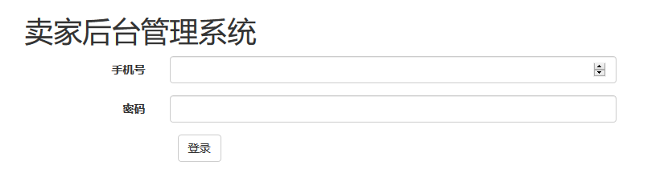
管理界面
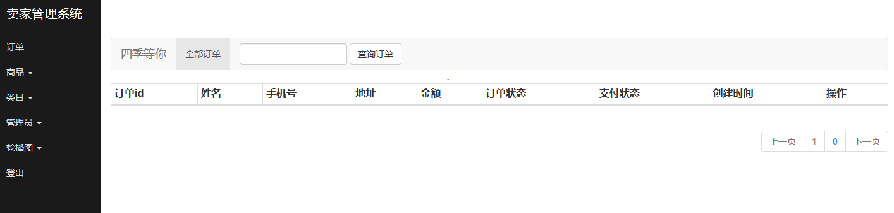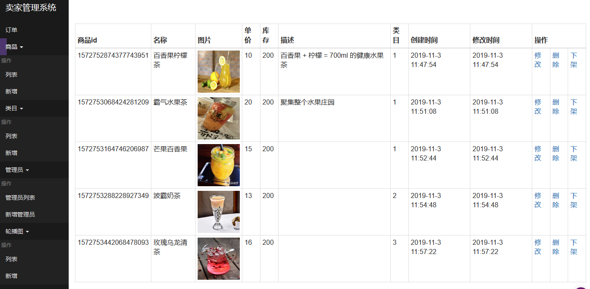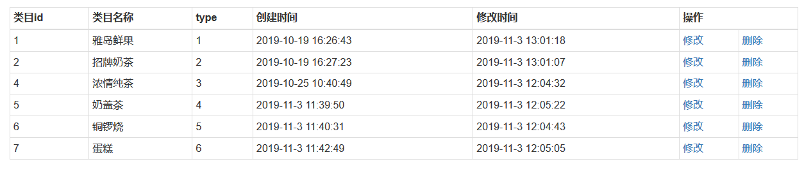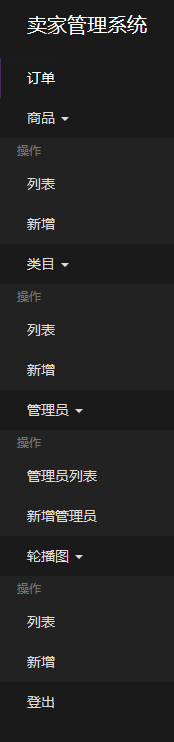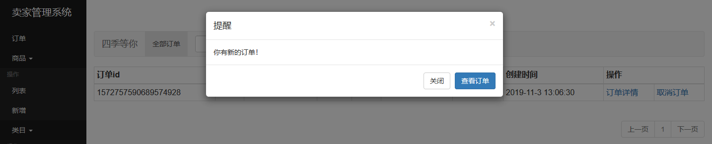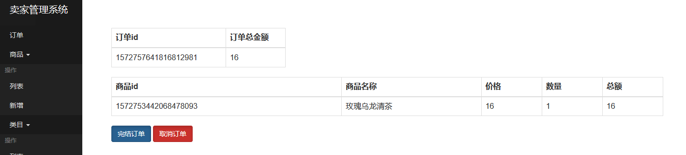
买家的前端界面
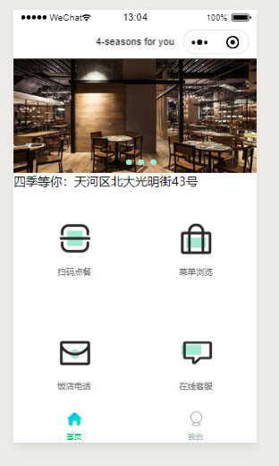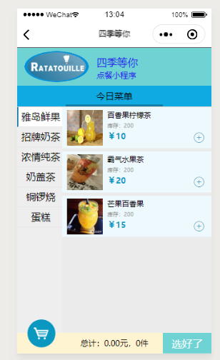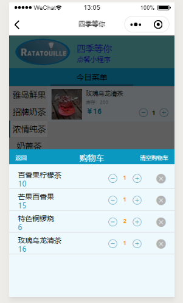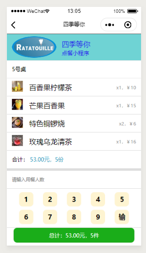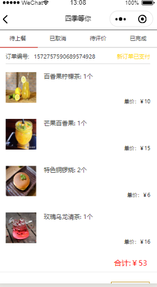
上面就是点餐系统的效果图。
此项目我已经上传到GitHub上。
GitHub：https://github.com/HCychao/SpringBootAndOrder.git
对项目有什么疑问可以留下评论，我会及时回复大家的疑问。